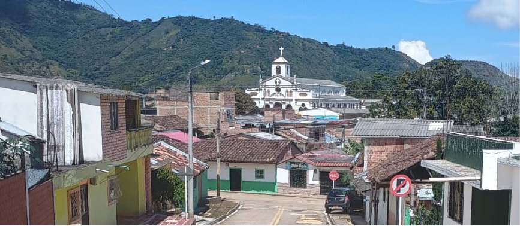

Nuestro Origen
Orígenes en el Sur de Colombia
Ser Café nació en 2024 en las montañas del municipio de La Florida, cuando la familia Chincha Calle decidió transformar la tradición cafetalera de sus ancestros en un proyecto especializado en café de alta calidad.
Comenzamos con solo 12 kilos de café tostado en grano y molido y hoy contamos con una bodega con capacidad de 3600 kilos mensuales dedicados a cafe premium seleccionado de forma manual, manteniendo siempre nuestros principios de cultivo sostenible y comercio justo.

Cultivo Sostenible
Utilizamos prácticas agrícolas que protegen el medio ambiente y preservan la biodiversidad de nuestra región.